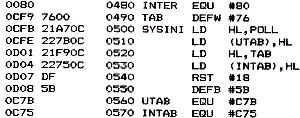
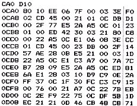
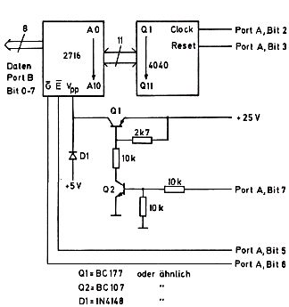

Nascom Journal |
Dezember 1981 · Ausgabe 11/12 |


Das Programmierprogramm wird in einem EPROM geliefert und ist voll verschiebbar. Das EPROM mit dem Programmierprogramm kann man also in jeden freien EPROM-Sockel (2708) des Nascom-Systems stecken. Gestartet wird das Programm dann auf der Anfangsadresse des Sockels.
Nach dem Start erfragt das Programm alle nötigen Eingaben vom Benutzer, so daß sich eine genaue Beschreibung erübrigt. Die Antworten des Benutzers werden jeweils mit „enter“ bzw. „new line“ abgeschlossen. Das Programm bietet folgende Möglichkeiten:
1) Test, ob das EPROM, das in der Fassung des Programmierers steckt, leer ist.
2) Laden des EPROMs in den Speicher des Nascom, z.B. um EPROMs zu duplizieren.
3) Vergleich des EPROMs im Programmierer mit einer Stelle im Nascom-Speicher. Man kann so überprüfen, ob ein gegebenes EPROM mit dem Speicherinhalt übereinstimmt.
4) Programmieren eines EPROMs. Der Speicherinhalt des Nascom ab einer beliebigen Adresse wird als 2k Block in das EPROM programmiert. Anschließend erfolgt automatisch eine Überprüfung.
5) Direktes Programmieren einzelner Bytes. Das Programm fragt nach der Anfangsadresse, von wo aus das EPROM programmiert werden soll. Anschließend gibt man die einzelnen Bytes ein. Jede Byteeingabe ist mit „enter“ bzw, „new line“ abzuschließen. Das Byte wird direkt programmiert und überprüft. Will man den Byte-Programmiermodus verlassen, dann gebe man eine nicht hexadezimale Kombination (z.B. „S“ für Stop) ein und der Programmiermodus wird verlassen.
Das Programm läuft mit dem Betriebssystem NAS-SYS.
Hardware: Zum Programmiergerät gehört eine kleine Zusatzplatine (PIO BUS kompatibel) die die Bauteile zur Ansteuerung des EPROMs aufnimmt. Es werden 5 Volt Versorgungsspannung und 25 Volt Programmierspannung benötigt, die dem 2708-Programmiergerät entnommen werden können.
Als Service kann ich Folgendes für Nascom Journal-Leser anbieten:
Platine: 35,– incl.
Platine + Material: 50,– incl.
Software in 2708 EPROM: 20,– incl.
Ich habe bereits einige Platinen fertiggestellt, so daß ich auch entsprechend schnell ausliefern kann.

Programmer fuer
2716
mit 5 Volt Betriebsspannung.
Copyright (c): R.Maurer Taunusstein
| Seite 12 von 55 |
|---|